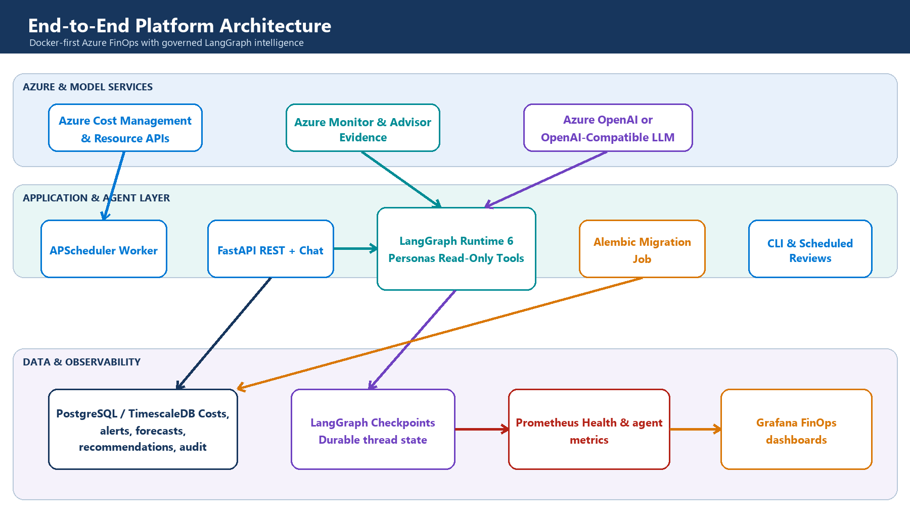

How modular boundaries, time-series data, specialized AI personas, and human governance turn cloud cost data into an extensible engineering platform
GitHub: https://github.com/nk2242696/CostMonitoringMultiAgent

| The short version Treat AI as a reasoning layer over trusted FinOps evidence—not as the database, calculator, policy engine, or cloud executor. |
|---|
It is deciding which responsibilities must remain deterministic and where probabilistic reasoning adds value.
Cloud cost platforms begin simply: ingest billing data, calculate totals, and draw a dashboard. Complexity arrives when users ask higher-order questions—why did spend move, which resource is responsible, whether a recommendation is safe, and who should approve it. Those questions cross data, architecture, risk, and communication boundaries.
A single service can answer all of them for a prototype. At scale, that design produces hidden coupling: collection code knows dashboard schemas, AI prompts know database tables, schedulers own business rules, and every provider change creates a cross-cutting rewrite. The system becomes difficult to test precisely because no component has a narrow contract.
The design therefore starts with boundaries, not technologies. Collection produces canonical evidence. Domain services calculate financial facts. Agents coordinate investigation. Governance evaluates proposals. APIs and dashboards present outcomes. Infrastructure makes those modules repeatable and observable.
| Architectural concern | Decision |
|---|---|
| Financial correctness | Keep totals, budgets, forecasts, and reference savings deterministic and testable. |
| Ambiguous investigation | Use specialized agents to select evidence, reconcile findings, and explain trade-offs. |
| Operational safety | Make tools read-only and require human approval for every proposal. |
| Evolution | Connect modules through typed contracts and repositories rather than implementation details. |
A modular core keeps change local
A senior architecture optimizes for the cost of the next change, not only the first release.
| Module | Owns | Can change without rewriting |
|---|---|---|
| Azure integration | Authentication and provider API translation | Domain logic, agents, dashboards |
| Monitoring domain | Costs, budgets, alerts, forecasts, recommendations | Cloud SDKs and model providers |
| Agent runtime | Planning, evidence requests, governance, communication | SQL schemas and Azure credentials |
| Persistence | Repository contracts, migrations, checkpoints, audit | API presentation and prompts |
| API and CLI | Transport, authentication context, response contracts | Collection and graph internals |
| Observability | Metrics, health, dashboards | Business workflows |
The important pattern is dependency direction. Business and agent code depend on interfaces—cost repositories, inventory tools, model factories—not on concrete SDK calls. Provider-specific details sit at the edge. This makes it possible to replace Azure OpenAI with an OpenAI-compatible endpoint, PostgreSQL with another repository implementation, or Grafana with another presentation layer without changing the reasoning model.
| Design heuristic If a model prompt contains SQL, a dashboard contains business rules, or a scheduler contains provider credentials, a boundary is probably missing. |
|---|
Why PostgreSQL plus TimescaleDB?
Cost data is relational in meaning and time-series in access pattern.
Azure cost records have dimensions—subscription, service, resource, region, tags, currency—and a time axis. Most queries combine both: monthly spend by service, daily trend for a subscription, latest forecast versus budget, or cost before and after a recommendation. A general document store makes these relationships and aggregations harder; a metrics-only store is weak for transactions, joins, approvals, and audit records.
| Option | Strength | Why it was or was not chosen |
|---|---|---|
| PostgreSQL | Transactions, joins, constraints, mature tooling | Chosen as the canonical system of record. |
| TimescaleDB extension | Time partitioning and time-oriented aggregation | Chosen to optimize cost history without introducing another database. |
| Dedicated metrics store | High-volume telemetry | Used for Prometheus metrics, not financial records or audit state. |
| Document database | Flexible documents | Not selected because financial dimensions, joins, and governance records benefit from explicit schemas. |
| Data warehouse | Large analytical workloads | A future option when multi-year, multi-tenant scale exceeds the operational database boundary. |
This is a deliberately reversible choice. SQLAlchemy repositories isolate the application from storage details, while Alembic gives schema evolution an explicit lifecycle. If scale later requires a warehouse or lakehouse, ingestion can fan out without forcing the API and agent layers to understand the migration.
Why LangGraph instead of a chain of prompts?
Coordination needs state, branching, fan-out, retries, budgets, and durable checkpoints.

The graph selects specialists, validates evidence, governs proposals, and permits only bounded refinement.
A prompt chain works when every request follows the same path. FinOps investigations do not. A budget question may need only cost evidence. A rightsizing question needs inventory and architecture context. A high-risk proposal may require refinement; a simple explanation may not. A graph makes those routes explicit and testable.
LangGraph was selected because it models conditional execution and durable state directly. Parallel specialists reduce latency, reducers define how evidence merges, checkpoints support continuity, and node boundaries create natural observability points. The trade-off is additional state design and dependency management; that complexity is justified only because the workflow genuinely branches and persists.
Personas are selected by evidence need—not by job-title theatre
More agents are not automatically better. Each persona must own a distinct decision boundary.
| When the request needs… | Persona selected | Why |
|---|---|---|
| Intent classification and a bounded plan | FinOps Orchestrator | Keeps routing separate from specialist conclusions. |
| Spend trend, top services, or cost concentration | Cost Analyst | Has access only to canonical cost-summary evidence. |
| Resource shape, region, inventory, or architecture context | Cloud Architect | Adds technical context without calculating financial truth. |
| A concrete action assembled from verified findings | Optimization Specialist | Separates evidence collection from recommendation synthesis. |
| Risk, conflicts, uncertainty, or policy review | Risk & Governance Reviewer | Creates an independent gate before communication. |
| A decision-ready summary | Executive Communicator | Changes presentation, not evidence or approval state. |
The orchestrator does not call every persona by default. It selects the minimum evidence-producing specialists required by the question. The optimizer and governance reviewer are mandatory only for proposal workflows. The communicator runs after governance so that polished language cannot bypass the control point.
A new persona is justified when it needs a distinct contract, evidence source, policy, or evaluation suite. It is not justified merely because another title sounds realistic. This rule keeps orchestration understandable and prevents token-heavy agent debates that produce no additional evidence.
| Extension example A Sustainability Analyst can be added later by registering carbon-intensity evidence, defining a narrow output contract, and adding one graph route—without changing cost collection or existing personas. |
|---|
Tools are the anti-coupling layer between AI and infrastructure
The model asks for evidence; application code decides whether and how that evidence may be retrieved.
Agents never receive database connections or Azure credentials. They receive schemas for allow-listed tools such as cost_summary and resource_inventory. The registry validates arguments, checks persona authorization, applies timeouts and call budgets, executes read-only code, and returns timestamped evidence IDs.
This indirection is essential. Prompts can evolve without changing data access. Storage can evolve without changing prompts. Security policy remains enforceable in code rather than being expressed as a sentence the model may ignore. It also creates a clean extension point: add a tool adapter and evidence contract instead of teaching every persona a new backend.
Governance is part of the graph, not a disclaimer
A recommendation is useful only when its evidence, uncertainty, risk, and approval status travel with it.

Product audit records remain separate from framework checkpoint state.
The proposal schema structurally requires human approval. Governance can accept a proposal for presentation, reject it, or request a bounded refinement. It cannot execute remediation. The runtime also limits model calls, tool calls, refinement rounds, and total duration before execution begins.
Four domain tables capture runs, events, messages, and artifacts. LangGraph owns separate checkpoint tables for workflow continuation. This separation avoids coupling product APIs to framework internals: the business audit model can remain stable even if the orchestration library changes.
| Persist | Do not persist |
|---|---|
| Evidence IDs, sources, timestamps, findings, proposals, verdicts, model/tool metadata | Credentials, raw secrets, hidden chain-of-thought, executable remediation |
| Actor scope, workflow status, latency, prompt version, safe errors | Provider stack traces or unbounded raw observations |
Why Docker Compose for the reference deployment?
The goal is a reproducible architecture boundary, not a claim that Compose is the final production platform.
The reference stack packages PostgreSQL/TimescaleDB, a one-shot migration, FastAPI, a scheduler worker, Prometheus, and Grafana. Health-gated dependencies make startup deterministic, while sharing one application image across API, migration, and worker processes reduces drift.
Compose is the right choice for local development, demonstrations, and integration tests because it exposes service contracts without adding orchestrator complexity. Production can move to managed PostgreSQL, Container Apps or Kubernetes, Key Vault, Managed Identity, and managed observability. The application modules do not need to change because deployment concerns remain outside them.
How the architecture extends
Extension should mean adding a module or adapter—not editing every layer.
| Future requirement | Extension seam |
|---|---|
| Another LLM provider | Implement the shared model factory contract and configuration validation. |
| New cloud or billing source | Add an integration adapter that emits canonical cost/inventory evidence. |
| New specialist persona | Define a persona contract, structured output, allowed tools, and graph route. |
| New evidence source | Register a read-only tool with Pydantic input/output and evidence metadata. |
| Warehouse analytics | Fan out normalized records or replace the repository implementation. |
| Different UI | Consume versioned APIs and artifact provenance; no graph rewrite is required. |
| Approval workflow | Add a domain lifecycle around proposal artifacts without coupling approval to cloud execution. |
| Safe remediation | Introduce a separate least-privilege executor, dry-run, rollback, and separation of duties. |
The last item is intentionally not implemented. Advisory intelligence and cloud mutation have different threat models. Combining them early would increase blast radius and make human approval ambiguous. A mature architecture earns autonomy only after evidence quality, evaluation, identity, rollback, and operational ownership are proven.
What I would measure next
Architecture quality should become visible through system behavior, not only diagrams.
Evidence coverage: percentage of claims with valid, current evidence IDs.
Governance quality: rejection and refinement rates by proposal type.
Cost and latency: model/tool calls and end-to-end duration per workflow.
Reliability: node failures, checkpoint resumes, timeouts, and provider fallback rates.
Decision value: accepted proposals, validated savings, and time from insight to approval.
Safety: unauthorized tool attempts, cross-actor access failures, and zero mutation events.
Closing perspective
The most important AI decisions were conventional software-engineering decisions.
The platform became extensible not because it used six personas, but because each responsibility gained a narrow boundary. Time-series financial data lives in a transactional system designed for its access pattern. Models operate through application-owned tools. Graph state is explicit. Governance is executable policy. Audit data is a product contract. Deployment and delivery are repeatable.
That framing changes the role of AI. The model is no longer an all-knowing service hidden behind one endpoint. It is one replaceable reasoning dependency inside a system that controls evidence, authority, state, cost, and failure. This is the difference between adding an LLM feature and engineering an AI platform.
| Architecture takeaway Build deterministic foundations, expose narrow evidence contracts, add the minimum specialized reasoning roles, and make every autonomous step bounded and observable. |
|---|
Explore the implementation
The complete source, architecture documentation, tests, Docker environment, dashboards, and release workflow are available in the public repository:
GitHub repository → https://github.com/nk2242696/CostMonitoringMultiAgent
| Project | Azure Cost Monitoring Multi-Agent Platform |
|---|---|
| Architecture | Modular Python, FastAPI, LangGraph, PostgreSQL/TimescaleDB, Prometheus, Grafana |
| Operating model | Read-only investigation and human-approved proposals |
| Deployment | Docker-first reference stack with semantic release automation |
| Author | Nikhil Kumar |